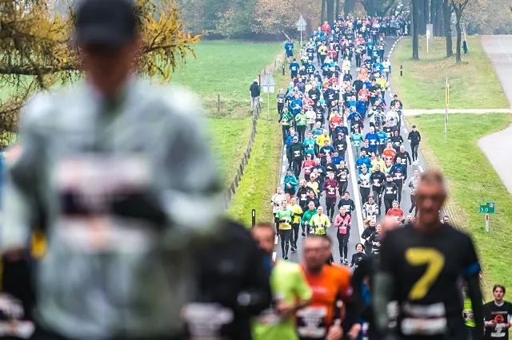

Nieuws ·
Minder sporten tijdens de corona-periode leidt tot minder deelnames aan de NN Zevenheuvelenloop

Dit bericht uit ons archief verscheen op 13 maart 2023 op NieuwsNijmegen.nl. Data, tijden en prijzen kunnen inmiddels anders zijn.
Resultaten onderzoek hardloopmarkt
Nijmegen – Uit onderzoek van de Radboud Universiteit en Stichting Zevenheuvelenloop blijkt dat minder sporten tijdens de corona-periode heeft gezorgd voor lagere deelnemersaantallen bij de NN Zevenheuvelenloop in 2022. Dat door corona minder mensen zijn gaan sporten blijkt uit cijfers van het NOC*NSF en ook uit het onderzoek dat Hidde Bekhuis van de Radboud Universiteit heeft uitgezet onder deelnemers aan de NN Zevenheuvelenloop van 2018, 2019 en 2022.
Het onderzoek van Bekhuis en de Stichting Zevenheuvelenloop probeert een antwoord te vinden op de vraag waarom de deelnemersaantallen van de NN Zevenheuvelenloop en andere hardloopevenementen in 2022 een stuk lager lagen dan voor de coronapandemie. De Stichting Zevenheuvelenloop heeft als doel om mensen in beweging te krijgen en te houden en vindt het daarom belangrijk om inzicht te hebben in hoe de coronacrisis de deelname aan sportevenementen heeft veranderd. Deelnemers aan het onderzoek kregen vragen voorgelegd over hun sportgedrag en deelname aan sportevenementen vóór en na de coronaperiode.
Minder sporten zorgt voor minder deelname aan hardloopevenementen
Van de bijna 10.000 lopers die meededen aan het onderzoek is 17% minder gaan sporten tijdens de coronaperiode (maart 2020 t/m maart 2022). Als mensen minder zijn gaan sporten, is er minder kans dat ze meedoen aan een hardloopevenement. Van de groep mensen die minder is gaan sporten deed 44% niet mee aan de NN Zevenheuvelenloop of een ander sportevenement in 2022. Van de mensen die evenveel zijn blijven sporten deed 27% niet mee aan de afgelopen NN Zevenheuvelenloop. Er is ook een kleine groep mensen die meer is gaan sporten tijdens de coronaperiode. De kans dat deze mensen meededen aan de NN Zevenheuvelenloop 2022 is hoger dan de kans dat mensen die evenveel sportten of minder sportten in de coronaperiode.
Invloed long-covid
Ook het hebben van long covid heeft invloed op de deelname aan sport en hardloopevenementen. Voor 5% van de respondenten was long-covid de reden om niet deel te nemen aan NN Zevenheuvelenloop 2022. 6,9% van de mensen die minder is gaan sporten, heeft long covid.
Long covid is niet de enige reden dat mensen minder aan hardloopevenementen meedoen. Van de groep mensen die tijdens de corona-periode minder is gaan sporten, maar waarbij dit niet door long-covid komt, deed 37% van de mensen niet mee aan de NN Zevenheuvelenloop of een ander hardloopevenement in 2022. Ander onderzoek van het Mulier Instituut, de HAN en het NOC*NSF laat zien dat het wegvallen van sportevenementen, en dus de doelen die voor de deelnemers daaraan gekoppeld zijn; en de afgenomen mogelijkheid om samen te sporten in de coronaperiode van invloed zijn geweest op deze afname in deelnemersaantallen.
Andere redenen om niet mee te doen
Naast de invloed van long covid en minder sporten tijdens de corona periode waren er nog andere redenen om niet mee te doen aan de NN Zevenheuvelenloop. Belangrijke redenen om niet mee te doen aan de NN Zevenheuvelenloop in 2022 zijn blessures (22%), andere verplichtingen op de datum van het evenement (21%), Nijmegen te ver reizen vinden (12%) en het ontbreken van een hardloopmaatje tijdens het evenement (10%). De invloed van corona op deze redenen is niet te duiden, omdat langjarige cijfers op dit vlak ontbreken.
Meer deelnemers uit Gelderland, minder uit Noord-Holland
In de deelnemersaantallen van 2022 is te zien dat een groter deel van de deelnemers uit de provincie Gelderland komt dan in voorgaande jaren (32% in 2022 vs. 29% in 2019). Het aandeel van deelnemers uit de provincie Noord-Holland is de laatste tien jaar opvallend gedaald van 16% naar 12%. Het aandeel van deelnemers uit de overige provincies blijft nagenoeg gelijk sinds 2012. Uit het onderzoek blijkt dat 34% van de lopers meer geneigd is om deel te nemen aan de NN Zevenheuvelenloop als er een goedkoop treinkaartje voor het evenement wordt aangeboden.
Overige bevindingen uit het onderzoek
De belangrijkste redenen om mee te doen aan de NN Zevenheuvelenloop zijn respectievelijk het parcours, de sfeer bij het evenement, het leveren van een prestatie en meedoen samen met hardloopmaatje(s) aan het evenement. Ten opzichte van deelnemers aan de 15 kilometer vinden deelnemers aan de NN Zevenheuvelennacht het meedoen samen met iemand anders en de sfeer significant belangrijker.
Het prestatief element is voor deelnemers aan de NN Zevenheuvelenloop belangrijker dan voor deelnemers aan de NN Zevenheuvelennacht. Deelnemers aan de nachtloop doen significant minder vaak mee met als doel een snelle tijd neer te zetten.
Alexander Vandevelde, directeur Stichting Zevenheuvelenloop: “Als stichting zetten we ons ervoor in om zoveel mogelijk mensen in beweging te krijgen. Het onderzoek geeft ons aangrijpingspunten om na te denken over hoe we mensen weer in beweging kunnen krijgen.”